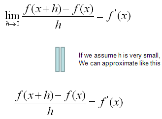
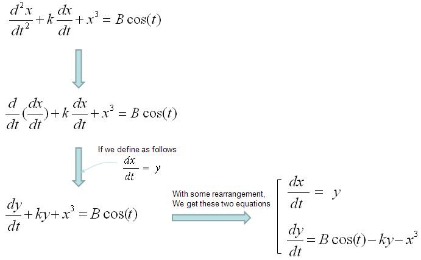
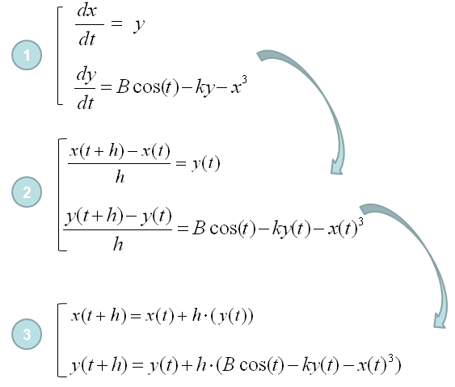
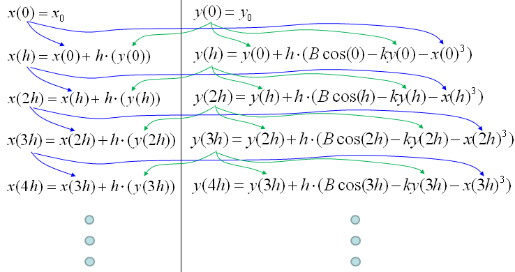
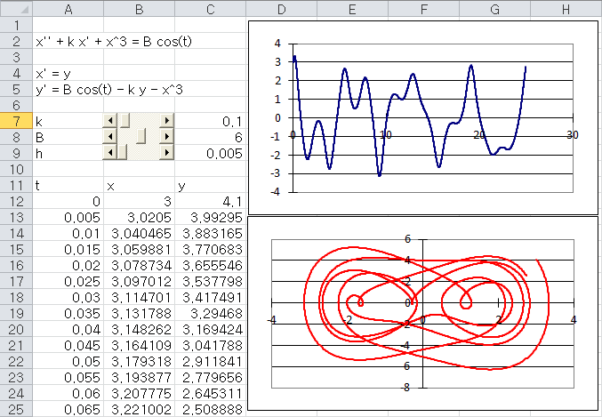

|
DE - Numerical Method Home : www.sharetechnote.com |
|
You may have seen so many different types of differential equations (e.g, linear homogenous, linear non-homogenous, non linear homogenous etc) and you might have seen a lot of different ways to solve the problem in symbolic (algebraic) method. But unfortunately there is no single method which can solve all of those types. Another issue with the algebraic method would be that it would be hard to use computer for the solutions. I think these two factors would have been strong motivations to rely on numerical solutions. You would find many thick books which is only for solving differential equations in numerical methods, but we don't have to go through every page of those thick books. The underlining logic is pretty simple and with the solid understanding of the logic with some hands-on would help you go through those thick books much easily.
The first step of the numerical method came from what you learned from high school math (in my case) or from Pre-Calculus course. I assume that you know the following equation.

This defines on how we can convert the deferential form (f'(x)) into a simple rational form(non-differential form). This is the core of the numerical method. Once you got this form, you can easily convert almost any differential equations into the difference equations you can easily solve numerically.
For example, let's assume that we have a differential equation as follows (This is 2nd order, non-linear , non-homogeneous differential equation). I want to apply the converting equation shown above to this differential equation, but the converting equation we have is only for the first order differential form only. It was not for the second or higher order form. Don't worry. By a few steps of mathematical manipulation, we can convert this 2nd order differential equations into a simultaneous differential equation which is made up of two first order differential equations. (In this way, you can convert any high order differential equations into a multiple first order differential equations. For example, you can convert 3rd order differential equation into three first order differential equations and you can convert 4th order differential equations into four first order differential equations).

Once you get a set of first differential equations, you can easily get a set of equations as shown in step (3) by a simple mathematical manipulations. I would not verbally explain much about this process, just pick any of the differential equation and try this process on your own. Otherwise you would never understand this process. Use this example just as a cheatsheet when your memory fades away.

Once you get the set of multiple equations as shown in step (3), you can trace the values of each point of the solution by following procedure. I would not verbally explain much about this process, just pick any of the differential equation and try this process on your own. Otherwise you would never understand this process. Use this example just as a cheatsheet when your memory fades away.

If you understood the logics shown just above, you can calculate each of the steps even with Microsoft Excel as shown below. I put the link so that you can download my spreadsheet but I strongly recommend you to try this on your own first.
 Download this Excel File : Click here.
Would this be simple enough for you ? If you say "No", it is true. If you say "YES", it would be true. It would take a little while and a certain amount of effort to understanding a new concept however simple it is. Just don't run away and give it a try.
Somebody would ask "Is this all for getting numerical solutions for a differential equation ?". Is it realy simple like this to get a solution for any differential equations (ordinary differential equation, more specifically)? If it is the case, why our numerical method text book is so thick ?"
Good Question. Just in terms of concept of numerical method this is almost whole story, but in terms of applying this method to real life problems there are some practical issues with the basic method that I explained above.
i) Issue 1 : Sometimes there is a situation where the function (solution to the differential equation) can be very fast chaning function. For example, a function oscillating with high frequency. Of course you can still use the basic method explained above with very small 'h' value. But in this case, the amount of time you would need to get the solution will be exponentially long. So it would be a little impractical in this case. If you are specifically interested in this issue and solution for it, try searching "Runge-Kutta" method.
ii) Issue 2 : Basically a numerical solution is to find a solution at many discrete points. It is not the continous solution. This gives you a problem. For example, let's assume that you got the solution of a differential equation at the points of independent variable (e.g x), x = 0.1, 0.2, 0.3, 0.4, 0.5 ..... What if I want to get the solution at x = 0.25 ? Do I have to calculate the whole process with h = 0.05 ? It is possible but it is impractical. Then how we get the solutions at the points that was not calculated ? The simplest and most widely used method is to use "interpolation" method.
In short, I would say your numerical method book for differential equation would get thick largely due to the two issues that I desribed above and I will explain these issues more detail (with illustrations) later. For now, understanding the basic process very clearly would be the highest priority.
|